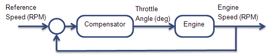
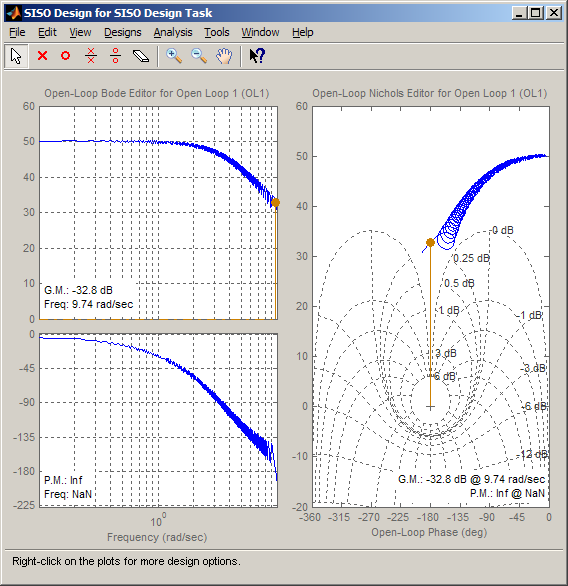
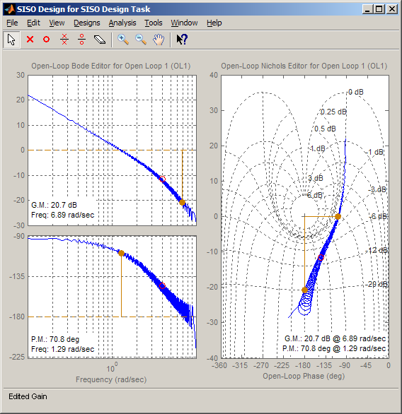
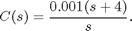
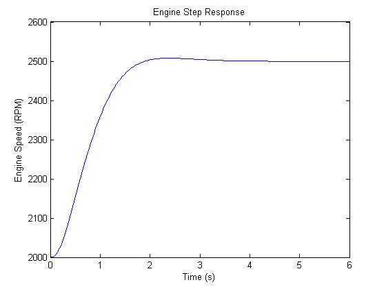

Compensator Design for Systems Represented by Frequency Response Data
This demo shows the design of a compensator for a plant model defined by frequency response data (FRD) using the interactive tools available in the SISO Design Tool.
Contents
Acquiring a Frequency Response Data (FRD) Plant Model
Non-parametric representations of plant models, such as frequency response data, are often used for analysis and control design. These FRD models are typically obtained from:
1) Signal analyzer hardware that perform frequency domain measurements on systems.
2) Non-parametric estimation techniques using the systems time response data. You can use the following products to estimate FRD models:
Simulink® Control Design™
Signal Processing Toolbox™
- Function: tfestimate.
System Identification Toolbox™
This example demonstrates the design of a compensator for a plant described by frequency response data.
Problem Statement
In this example, you control engine speed by actuating the engine throttle angle in the following model.

The design requirements are:
- zero steady-state error step reference speed changes
- phase margin > 60 degrees
- gain margin > 20 dB.
The frequency response of the engine is already estimated and stored in the AnalyzerData variable in the file FRDPlantDemo.mat. First, load the data:
load FRDPlantDemoData.mat
The variable AnalyzerData contains the frequency response information of the engine.
AnalyzerData
AnalyzerData =
Response: [594x1 double]
Frequency: [594x1 double]
FrequencyUnits: 'rad/s'
To use this data in the Control System Toolbox™, create an FRD model object:
FRDPlant = frd(AnalyzerData.Response,AnalyzerData.Frequency,'Unit',AnalyzerData.FrequencyUnits);
Designing the Compensator
Next, start the SISO Design Tool.
>> sisotool({'bode','nichols'},FRDPlant)
The SISO Design Tool opens with both a Bode and Nichols open-loop editors.

You can design the compensator by shaping the open-loop frequency response in either the Bode or Nichols editor. In these editors, you can interactively tune of the gain, poles and zeros of the compensator.
To satisfy the tracking requirement of zero steady-state error, add an integrator to the compensator using the bode editor's right-click "Add Pole/Zero" menu of the Bode editor. To meet the gain and phase margin requirements, add a zero. Modify the location of the zero and the gain of the compensator until you satisfy the margin requirements.
The following figure shows a possible compensator design that meets all of the requirements.

This compensator design, which is a PI controller, achieves a 20.7 dB gain margin and a 70.8 deg phase margin.

You can export the designed compensator to the workspace using the "File->Export..." menu item.
Validating the Design
For the final step in the design process, validate the performance by implementing the design on the engine. In this example, a nonlinear representation of the engine in Simulink® is used to simulate the response.
Plot the response of the engine speed to a reference speed command change from 2000 to 2500 RPM:
plot(EngineStepResponse.Time,EngineStepResponse.Speed) title('Engine Step Response') xlabel('Time (s)') ylabel('Engine Speed (RPM)')
The response shows zero steady-state error and well behaved transients with the following metrics.
stepinfo(EngineStepResponse.Speed,EngineStepResponse.Time)
ans =
RiseTime: 1.1048
SettlingTime: 1.7194
SettlingMin: 2.4501e+003
SettlingMax: 2.5078e+003
Overshoot: 0.3127
Undershoot: 0
Peak: 2.5078e+003
PeakTime: 2.3853